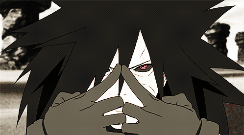
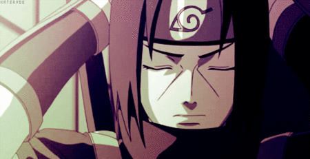
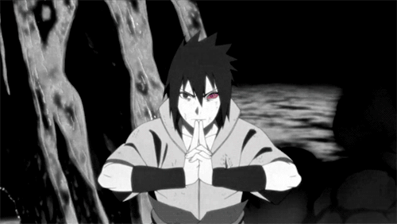
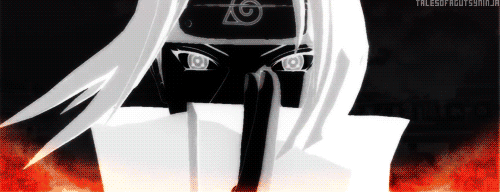
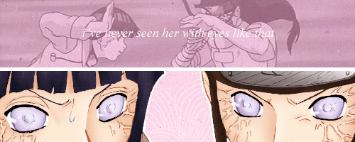
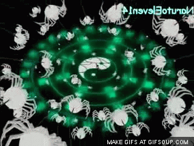
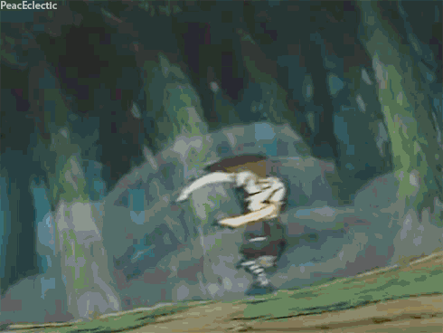
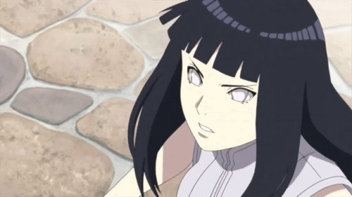

This webpage is about the 2 strongest clans in the hidden leaf village. It will also give you the break down of certain members and their special prowess.
The descendants of Indra, the elder son of the Sage of the Six Paths, the Uchiha were once renowned as one of the Hidden Leaf Village's most powerful clans. Select members of the clan were particularly known for their Sharingan, Magical Eyes which gifted their bearers with incredible power.Before the founding of the Hidden Leaf, they had an infamous rivalry with the Senju clan that spanned countless years, all the way back to the era of the very first shinobi. But one day the two clans finally signed a truce, and their leaders become the founders of the Hidden Leaf.A few years before the beginning of the series, the entire clan was destroyed in one night by its brightest star, Itachi Uchiha, who left alive only one survivor; his younger brother Sasuke, who swore to avenge the Uchiha by taking revenge on Itachi.Truth is, Itachi was a double agent. While the Uchiha thought that he was spying for them, he was actually spying on the Uchiha for the leaf village. He was ordered to try to stop their plans, and when he couldn't come up with a way to stop them, he had to kill them. He couldn't kill Sasuke though. So he had Sasuke believe that he went rogue. He wanted Sasuke to kill him as punishment for having to kill his clan. Obviously that went awry when Sasuke got the Curse mark and Joined Orochimaru, so he had made another plan to have Sasuke kill him and free him from the Curse mark and Orochimaru that hid inside Sasuke.After Sasuke found out the truth he planned to destroy the Hidden Leaf, until the great ninja war ,where he joined forces with the Hidden Leaf once again. Sasuke now has a child with Sakura named, Sadara Uchiha.
   The Hyuuga Clan are one of the oldest shinobi clans in the world and they are renowned for possessing the Byakugan, one of the Three Great Doujutsu.Hamura, the younger son of the Rabbit Goddess Ootsutsuki Kaguya, sired several children who remained behind when he and the rest of the Ootsutsuki Clan undertook the duty of safeguarding the husk of the Ten-Tailed God and watching over the world of shinobi. One of those children were blessed with the Byakugan that Hamura himself had inherited from his mother, and those same eyes were passed down through the generations as a kekkei genkai.The Byakugan first came into existence when Kaguya consumed the Divine Fruit and resided within her pupiless, white eyes that were an innate characteristic of her clan. Almost every child of the Hyuuga Clan is born with those same eyes, reflecting that heritage and power even when they do not have the Byakugan itself.With the Byakugan, the Hyuuga can see through any solid object, extend their sight over great distances, have nearly a 360° range of vision and can see chakra on an unparalleled level. The Hyuuga developed their own branch of Gentle Fist taijutsu using their ability to see a person’s chakra pathways.The style gathers chakra into the hands and then releases it in a controlled burst directly into the opponent’s chakra pathways with a single touch. The chakra damages the pathways and any surrounding flesh and organs. Shinobi cannot train to strengthen their insides which makes practically everyone incredibly vulnerable to this fighting style.The next level requires the Hyuuga to perceive the chakra points of the pathways and jab them with their fingers. By applying chakra and pressure to the point with a touch, it closes the point and thus disrupts the opponent’s chakra flow.It can be used to increase or decrease their chakra flow to destabilize their chakra control, or even halt the flow to prevent them from using chakra at all. This requires more skill and a Byakugan strong enough to perceive the points. However it is more suited to incapacitate the enemy rather than kill them, though it naturally makes such an act much easier.The Byakugan isn’t an absolute requirement for using this taijutsu style; other ninja can achieve that level of chakra control and even learn where to strike an enemy. But where others can only make a rough estimate, the Hyuuga can see exactly where to aim and are practically born to the style.Once, their fighting style was called the Trigram Fist but few know it and even fewer use it. That name stems from the symbols that the Hyuuga are taught to imagine, utilizing their omni-directional range of vision to be able to attack or defend against any enemy within their range.It is now simply known as the Gentle Fist because it has exemplified that entire style of taijutsu for centuries and is indisputably the strongest of its kind. To this day, it is recognized as one of the deadliest taijutsu styles in existence.The clan was split into the Main House and Branch House. The Main House were the rulers who governed the clan and did not participate in missions or warfare except in most dire circumstances. Because of this, it was their duty to devote their time to training, mastering every aspect and pushing the boundaries of their unique style.The Branch House was branded with the cursed and they devoted themselves to fighting in war, performing missions, bringing in revenue and protecting the Main House. They were raised to believe that the death of the Main House was the death of the clan itself and that it was their duty to give their lives to protect them.In the beginning, the Main House ruled fairly and the Branch House served them with honour. But soon enough the Main House questioned why they should share the elite jutsu they had painstakingly developed with the ones who were meant to serve them. They believed it unfair that the Branch House gained recognition for these skills and were seen as the strength of the clan when they were its leaders.What also came to light at this time was that because the cursed seal was tied into the wearer’s entire chakra system, it could be partially activated to attack their pathways. Since the chakra system is connected to one’s muscles, organs, bones, and tissue, exploiting them the seal allowed them to inflict full-body pain on the subject, attacking every part of them simultaneously and equally.New rules and traditions were set in place so that only the Main House were allowed to learn the advanced jutsu of their Gentle Fist whilst the Branch House were left with only the fundamentals. Should a Branch House show any defiance towards the Main House then they would be punished with crippling pain or even death. It was this that lead to the family cursed seal to become known as the Caged Bird Cursed Seal to represent the fate of the Brand House.
   